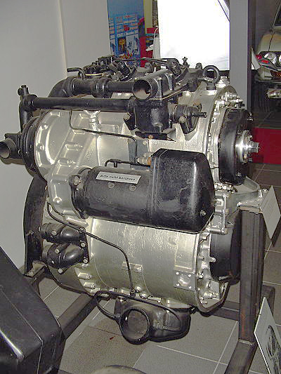
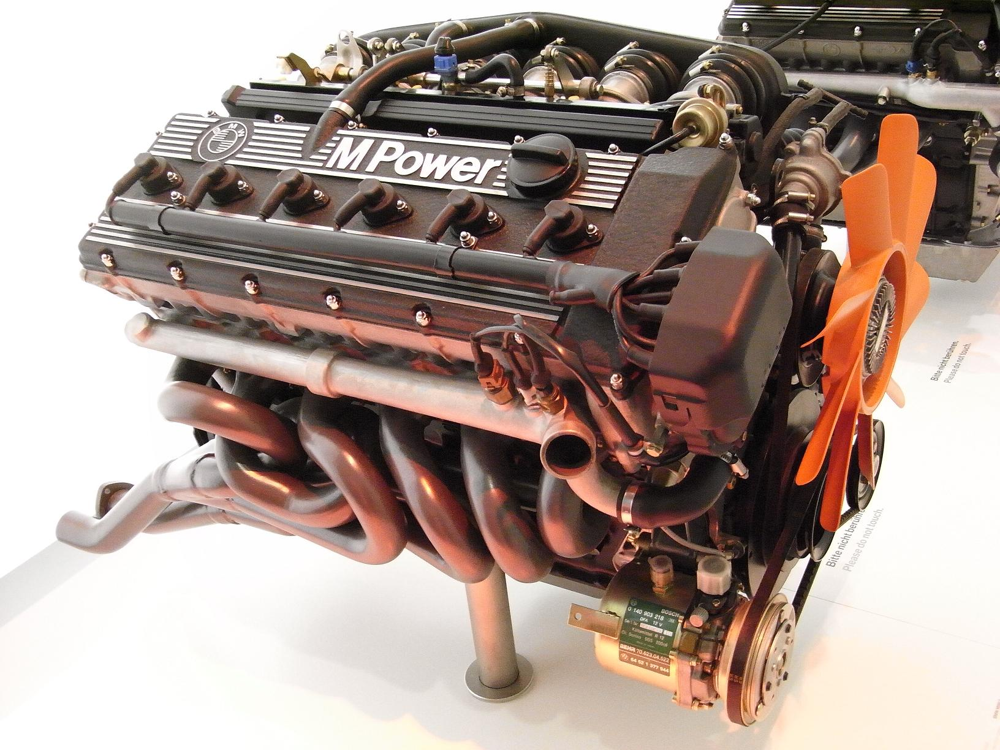
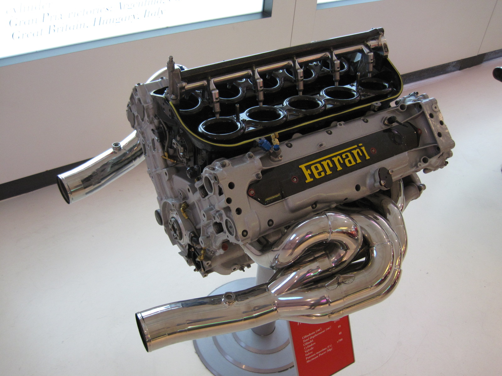
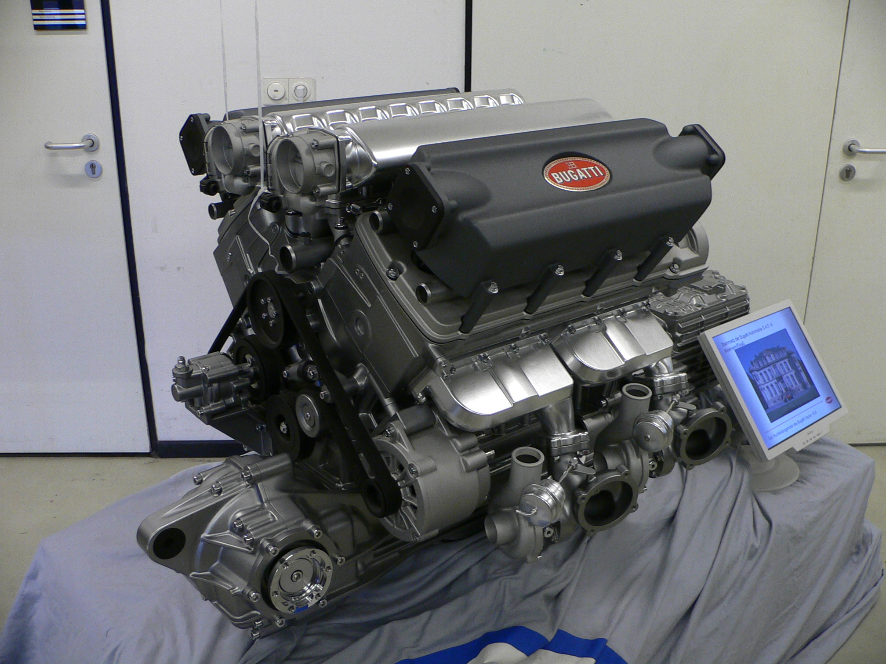

Inventé par Félix Wankel en 1929, le moteur rotatif est une alternative ingénieuse au moteur à pistons classique. Grâce à un rotor triangulaire tournant dans une chambre ovale, il réalise les quatre phases du cycle moteur (admission, compression, explosion et échappement) sans avoir recours à des soupapes. Cette conception innovante offre un excellent rapport puissance/cylindrée et une mécanique plus simple et compacte, mais elle présente aussi des défis techniques, notamment en matière d’étanchéité et de lubrification, qui ont limité sa diffusion.
Cliquez sur l'image en dessous :

Le moteur en ligne est l’une des architectures les plus anciennes et les plus utilisées dans l’histoire de l’automobile. Apparue à la fin du XIXᵉ siècle avec les premiers modèles de Karl Benz et Daimler, cette conception s’est imposée grâce à sa simplicité, sa fiabilité et sa robustesse. Facile à fabriquer et à entretenir, le moteur en ligne reste aujourd’hui très courant, même s’il a peu à peu laissé la place aux moteurs en V ou en W pour les véhicules plus puissants.
Cliquez sur l'image en dessous :

Le moteur en V se distingue par son architecture particulière, qui rapproche les cylindres deux par deux autour d’un vilebrequin commun. Cette configuration permet de réduire la longueur du moteur par rapport à un moteur à cylindres en ligne et d’offrir un fonctionnement plus souple, notamment aux bas régimes. Utilisée dans des modèles emblématiques comme les V-twin Harley-Davidson, elle présente des avantages notables en termes de compacité, de rigidité et de régularité de fonctionnement, tout en comportant certains défis techniques liés à l’équilibre et au refroidissement.
Cliquez sur l'image en dessous :

Le moteur en W est une architecture originale apparue au début du XXᵉ siècle, d’abord utilisée dans l’aviation pour sa compacité et sa puissance. Composé de plusieurs rangées de cylindres inclinées formant un “W”, il a été remis au goût du jour dans les années 1990 par le groupe Volkswagen, notamment sur des modèles prestigieux comme la Bugatti Chiron. Sa conception permet d’obtenir une grande puissance dans un format réduit, mais reste complexe, ce qui réserve ce type de moteur aux véhicules de très haute performance.
Cliquez sur l'image en dessous :
